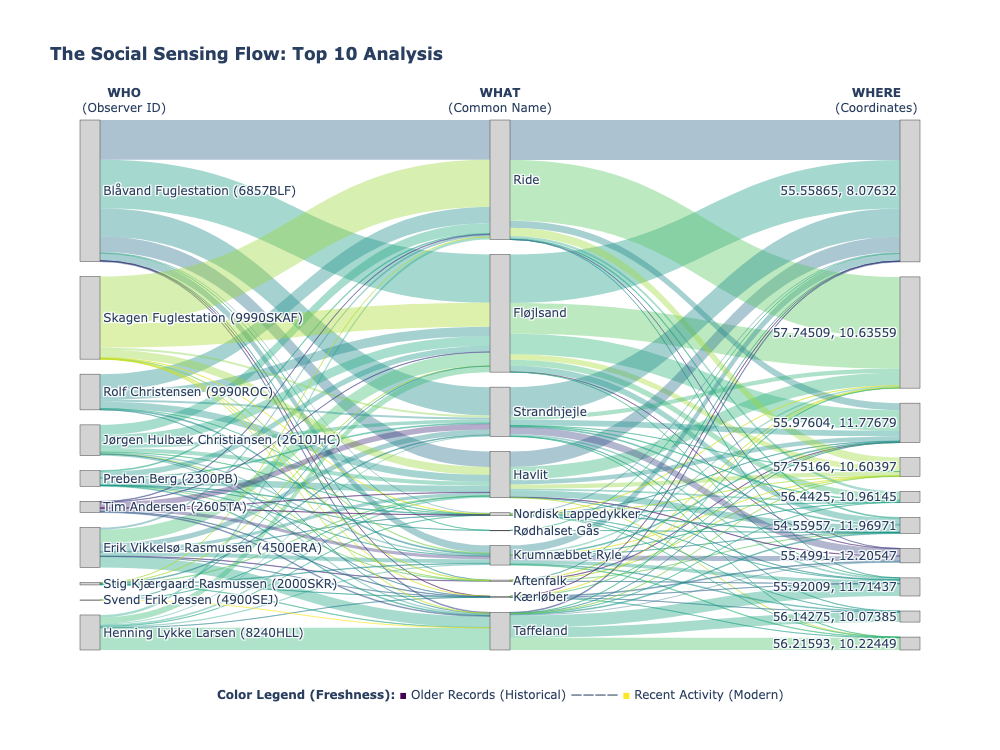
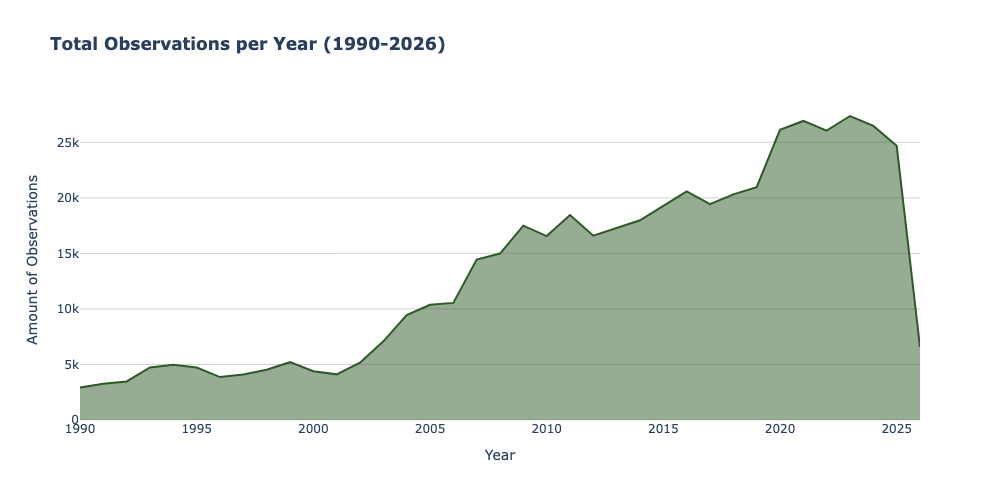
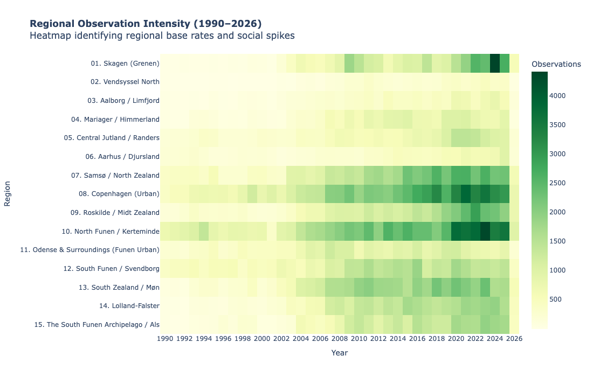

The Human Flock: Mapping the Social Swarm
When a biological rarity becomes a social phenomenon.
In the quiet corners of the Danish landscape, a single notification can trigger a migration. It isn't the birds who are moving—it’s the humans.
When a rare species is sighted, a "Social Gold Rush" begins. Within minutes, a digital signal
ripples through the birding community; within hours, dozens of observers have "swarmed" a single
coordinate. This project, The Human Flock, uses thirty years of birdwatching data not
to study the flight patterns of wings, but the social patterns of people.
Beyond the Bird: The Human Sensor
Using millions of observations from DOFbasen (1990–2026), we treat every
birdwatcher as a high-precision social sensor. By focusing on species categorized as
Vulnerable (VU), Endangered (EN), or Critically Endangered (CR), we isolate the moments
of highest social "value." These rare sightings act as catalysts that reveal the hidden
architecture of the Danish birding community:
The Key Columns
On the right you see our key columns, which represent the four "atoms" of our dataset.
Observation Date: Acts as a temporal sensor, capturing the exact moment a human decided to engage with their surroundings and report a sighting.
Location Coordinates: Functions as a spatial sensor, revealing the geographical "hotspots" where social infrastructure and human presence overlap with the wild.
Common Name: Serves as the incentive or "trigger" that motivates the human sensor to act, showing which species drive the most community activity.
Observer ID: Provides the social identity, identifying the individual or institution—like the bird stations.
SOCIAL SENSORS:
---The Social Sensing flow
The plot to the left provides a multi-dimensional view of how human observation transforms into a structured data stream. By encoding the Observation Date directly into the "freshness" of the flows, we can draw several key conclusions about our social sensing network. It is an overview of top 10 Observers, species and locations to emphasize their relationship
Institutional vs. Individual Consistency: The thickest, most stable flows originate from institutional sensors like Blåvand Fuglestation and Skagen Fuglestation. Their light green and teal hues suggest a long-standing, consistent contribution to the data baseline over many years.
The Rise of Modern Hotspots: Bright yellow and lime-green lines represent more recent "social pulses." Notice how species like the Ride and Fløjlsand act as modern triggers, drawing data from a wide variety of observers toward specific geographical coordinates.
Temporal Shifts in Activity: The presence of thinner, purple links (historical baseline) interspersed with vibrant yellow links (modern activity) illustrates the digitization of nature.
Convergence: The rightmost column shows how disparate human observers (the "Who") and different bird species (the "What") ultimately converge on a few specific Spatial Sensors (the "Where"). These locations represent the physical infrastructure — parking lots, hides, and coastlines—that facilitate the community’s ability to act as sensors.
This visualization confirms that our dataset is not merely a list of birds, but a living history of human attention. The variation in color and thickness proves that social sensing is a dynamic process where modern technology has intensified the frequency and "freshness" of the data we receive from the field.

Total observation per year (1990-Present)
The plot above tracks the raw growth of observations from 1990 to 2026:
1990–2003: Data volume remained consistent and low, averaging approximately 5,000 observations per year. Birdwatching was largely an analog activity. Observations were often recorded in physical notebooks and shared through local club newsletters or landline phone "rare bird" alerts .
he internet was in its infancy. DOFbasen (the Danish Ornithological Society's database) was established as an online platform toward the end of this era, shifting the mission from local club sharing to a science-based NGO profile.
2004–2014: A steady upward trend began, with volume doubling to roughly 15,000–20,000 annual reports. This decade saw the rise of the "prosumer" (professional consumer). Digital cameras became affordable, allowing birdwatchers to provide photographic evidence, which increased the "social value" of sightings (Lundquist et al., 2025).
The mid-2000s marked the birth of the Web 2.0 era—interactive platforms where users didn't just read data but contributed to it (Turakulov, O. et al, 2024). The launch of the first smartphones (iPhone in 2007) began to change the "spatial sensor" aspect, as GPS technology started appearing in consumer hands (Atsumi, K. et al., 2024).
2015–2024: Significant growth occurred, reaching a peak of nearly 27,000 observations in the early 2020s. Birdwatching became democratized. Gamification elements and species identification apps made the hobby accessible to a "dispersed army of enthusiasts" beyond just experts (Lundquist et al., 2025). The COVID Effect: While your data doesn't explicitly label it, the peak in the early 2020s aligns with a global trend where urban residents turned to nature during pandemic lockdowns, using smartphones to document local biodiversity (Basile, M. et al., 2021).
2026: The current decline is a result of incomplete data for the ongoing year.
This trend establishes a baseline for comparing modern data density against historical levels..

Geographical Distribution
The visualization highlights three critical patterns in the Danish "Social Sensor" network:
- Infrastructure over Population: Surprisingly, Nordfyn (70k) outperforms København (67k). This proves that high-quality nature infrastructure can generate more social data than a capital city's population density.
- The "Famous Site" Effect: There is a massive drop-off from Skagen (33k) to Vendsyssel Nord (6.1k). This shows that human "flocking" is highly concentrated at famous landmarks, even if birds are present in the surrounding regions.
- Urban Baselines: København and Odense act as reliable "Urban Hubs," where high sensor density is driven by proximity and convenience rather than rare biological events.

Total Observations per Area per Year
The heatmap exposes the "geographic pulse" of Danish birding. By looking at the horizontal intensity of each row, we can objectively separate the Base Rate (human presence) from Anomalous Spikes (biological events).
The heatmap proves that North Funen and Copenhagen are the primary sensors of the country, while Skagen is the primary site for event-driven "data swarms." This allows us to weight observations from remote regions (like Vendsyssel) more heavily when they spike, as they have a much lower "Human Base Rate."

The Social Sensor: Decoding the Behavioral Pulse of the Community
With the geographical and temporal baselines established, we move from the static 'where and when' to the dynamic 'how.' By treating these observations as a high-frequency social sensor network, we can now zoom in on the behavioral mechanics of the community. The following visualizations strip away the feathers to reveal the human pulse: how fast we react, how we swarm across the map, and when the 'digital birdwatcher' is most active.